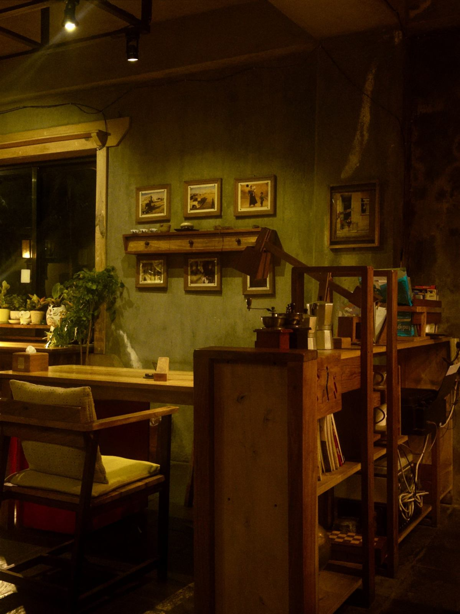

古民家の佇まい
ヘンピカフェは、名護市の静かな一角にひっそりと建つ、琉球古民家を活かしたカフェです。入口で靴を脱いで上がる、昔ながらの沖縄の家のつくりをそのまま残しています。赤瓦の屋根や、年月を重ねた建具の雰囲気を感じながら、ゆっくりとした時間をお過ごしいただけます。
ヘンピカフェは、名護市の静かな一角にひっそりと建つ、琉球古民家を活かしたカフェです。入口で靴を脱いで上がる、昔ながらの沖縄の家のつくりをそのまま残しています。赤瓦の屋根や、年月を重ねた建具の雰囲気を感じながら、ゆっくりとした時間をお過ごしいただけます。

店内にはテーブル席のほか、床に座って寛げるソファ席、オーナーと会話しながら過ごせるカウンター席をご用意しています。お一人での来店でも気を遣わずゆったりと過ごせるよう、席のタイプを選べるようにしています。ご注文はカウンターにてオーナーへお声がけください。
静かな環境の中、外のテラス席で過ごす時間もおすすめです。緑に囲まれた空間で、ゆったりとした時間をお楽しみいただけます。なお季節や天候によっては、店内席をおすすめする場合もございます。あらかじめご了承ください。
店内の料理やお菓子は、オーナーが一人で丁寧に仕込んでいます。ワンオペ運営のため、お出しするまでにお時間をいただくこともありますが、一皿一皿に気持ちを込めてお作りしています。ヴィーガンや乳製品フリー、グルテンフリーのスイーツをご用意しているのも、来てくださる方の身体のことを考えたいというオーナーの想いから生まれたものです。